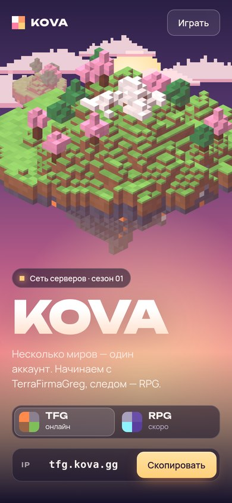

01 Выбран · доработан
Закат
Кинематографичный герой: процедурный воксельный остров в розово-персиковом небе. Доработан под сеть: переключатель миров TFG / RPG (закат ↔ ночь с замком и кристаллами), карточки серверов, дорожная карта, лаунчер, Discord.
- Шрифты
- Unbounded · Manrope
- Палитра
- Ход
- View Transition между мирами, параллакс, :has()
